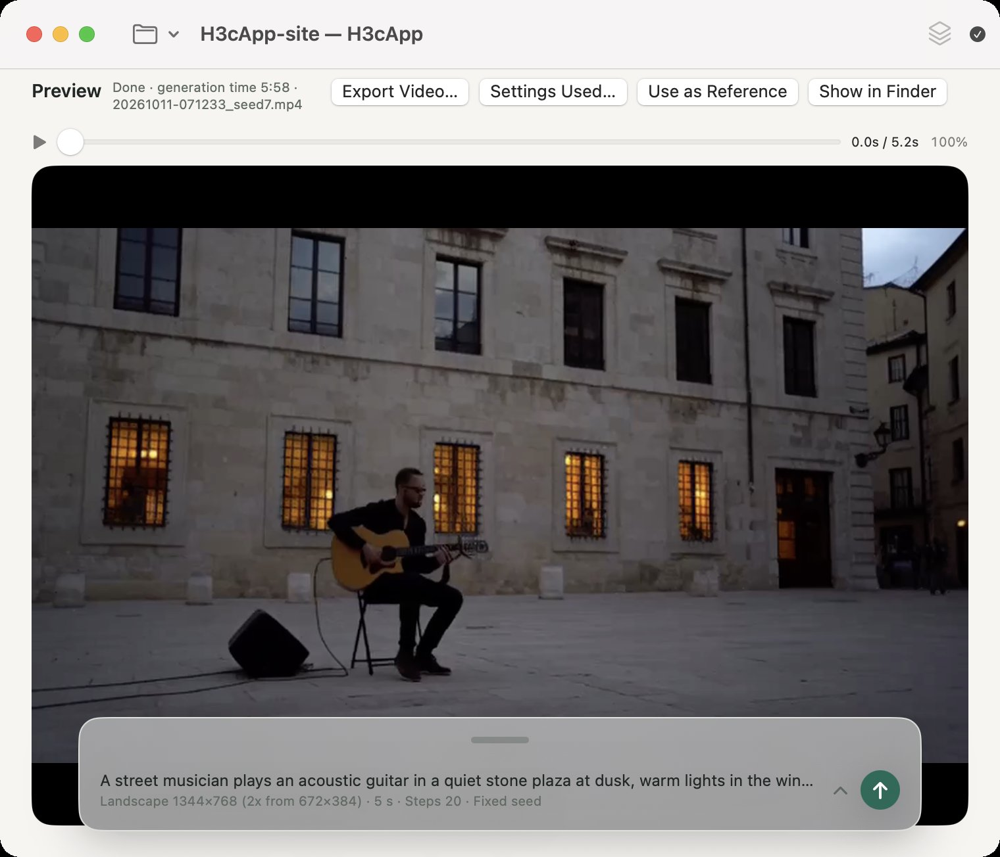

H3cApp for macOS
AI video with sound, made on your Mac.
H3cApp is a macOS app that turns text and images into short videos with sound, using MiniMax H3, a video generation model by MiniMax. Generation runs on your Apple Silicon Mac. It is a ready-to-use app, so there is no Python or PyTorch environment to set up.
Powered by MiniMax H3 — an independent app, not an official MiniMax product.
For Apple Silicon Macs with macOS 15 Sequoia or later. The MiniMax H3 model is a separate download (about 144 GB and up for the official model, or about 35–45 GB as a quantized model (GGUF)) and comes under MiniMax H3's own license.

Updates
- v0.6.5 () Moving the prompt panel, and pinching over it, fixed
- v0.6.4 () AI-generated label, and the prompt and settings recorded in the video
- v0.6.3 () Joined generation with each clip's length, images and audio set one by one
- v0.6.2 () Progress previews while generating
- v0.6.1 () Add Ref2VA later to a registered model
- v0.6.0 () Download and import quantized models (GGUF)
- v0.5.0 () Lip sync and joined generation up to 90 seconds
Examples
These videos were generated with H3cApp v0.4.4 (model: MiniMax H3) from the prompts below. All of them have sound; press play to hear it (nothing plays automatically).
Square, Medium (512×512), 5 s, with sound
From text, 20 steps, speed “Standard”, seed 7. Took 5 min 59 s (M5, 24 GB).
A small orange cat plays with a ball of yarn on a wooden floor in soft afternoon light. Static camera, gentle movement. Soft room ambience, no speech, no music.
Landscape, Medium (generated at 672×384, upscaled 2x to 1344×768), 5 s, with sound
From text, 20 steps, speed “Standard”, seed 7. Took 6 min 9 s (M5, 24 GB). The 2x upscale is high-quality resampling after generation.
A street musician plays an acoustic guitar in a quiet stone plaza at dusk, warm lights in the windows behind him. Slow push-in camera. Gentle guitar melody, distant footsteps, no speech.
Square, Small (256×256), 5 s, with sound
Same prompt, seed and settings as the first cat, only the size set to Small. This is the first setting tried in Getting started; details are rougher. Took 1 min 44 s (M5, 24 GB).
The videos are re-encoded for the web. The same prompt and seed can give different results on another Mac or with other settings. The author also has a video on YouTube (external site).
What you can do
-
Turn text into video
From a text prompt, H3cApp makes a video (MP4) with matching picture and sound. Lengths run from 1 to 15 seconds in one generation; joined generation makes longer videos from clips one after another. Landscape, square or portrait.
-
Bring an image to life
Start a video from a first (and optionally last) image, or make a new video that takes after reference images, videos and audio.
-
Try several takes of the same idea
With a project, generate several videos in a row with different seeds, and bring back the settings of the one you like later.
-
Match a voice or song
Pick an audio file of a voice or a song, and the picture, such as mouth movements, is made to match it (lip sync). The video's sound is that audio itself.
-
Continue and go longer
Make a clip that carries on from a finished video, or join short clips one after another into a longer video, with each clip's length, directions, images and lip-sync audio set one by one.
-
Add-on models (LoRA)
Stack LoRAs made for MiniMax H3, such as Turbo LoRAs that generate in far fewer steps. You don't need any to make videos.
Will it run on my Mac?
Check the supported system and free disk space before you download. The AI model in particular is very large and is downloaded separately from the app.
| Mac | A Mac with Apple Silicon (an M-series chip). Intel Macs are not supported. |
|---|---|
| macOS | macOS 15 Sequoia or later |
| With an M5-class GPU | The fastest compute mode, “Fast (int8 cache)”, and “Fast mode (experimental)” are available. |
| Other Apple Silicon | Runs with “Low memory (SSD streaming)” or “Resident (for plenty of memory)”. Speed and memory needs depend on the Mac and the settings, and are not M5-equivalent. |
| Memory | The author tested on an M5 with 24 GB of memory (512×512 up to 15 s fit in 24 GB). Less memory has not been tested. |
| App | DMG, about 19.0 MB (signed and notarized) |
| AI model (from text, first/last image) | MiniMax H3 FL2VA: about 144.1 GB (134.2 GiB). Needed first. |
| AI model (reference images, videos, audio) | MiniMax H3 Ref2VA: another 144.1 GB or so, about 288.1 GB (268.3 GiB) in total. Add it when you need it. |
| Other space | About 19.3 GB per int8 cache (when used on an M5-class Mac), generated videos, copies of reference files, and working space. |
Mind the model's license. MiniMax H3, the model that generates the videos, comes under its own, somewhat unusual license, the MiniMax H3 Community License, separate from the app's MIT License. It differs from typical open-source licenses: for example, it only applies in certain regions. Before downloading and using the model, read the key points of the license and the full license.
Downloading the model the first time needs an internet connection; generating videos runs on your Mac. See Getting the model for details.
How it goes
-
Install the app
Download the DMG from the GitHub releases page and drag H3cApp into Applications.
-
Get the model
From the window shown at first launch, download the model (about 144 GB). Depending on your connection this can take several hours or more. An interrupted download resumes.
-
Make a video
Make one small 5-second video, play it, and save it.
How long it takes
Measured on the author's Mac. Other settings change both the time and the result.
| Video length | Speed “Standard” | Speed “Fastest” + Fast mode (experimental) |
|---|---|---|
| 5 s | 5 min 59 s | 2 min 38 s |
| 10 s | 15 min 56 s | 5 min 39 s |
| 15 s | 30 min 08 s | 9 min 25 s |
Other sizes and speed settings are in the technical reference's measured generation times.
Download
The latest version is on the GitHub releases page. As of October 23, 2026, the latest is v0.6.5 (released October 23, 2026).
Under Assets on the releases page, choose the .dmg file, such as H3cApp-0.6.5.dmg. “Source code (zip)” and “Source code (tar.gz)” are for developers and are not used for a normal install.
See each release's notes for what changed.